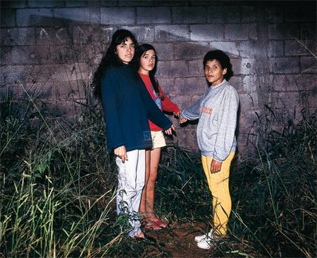
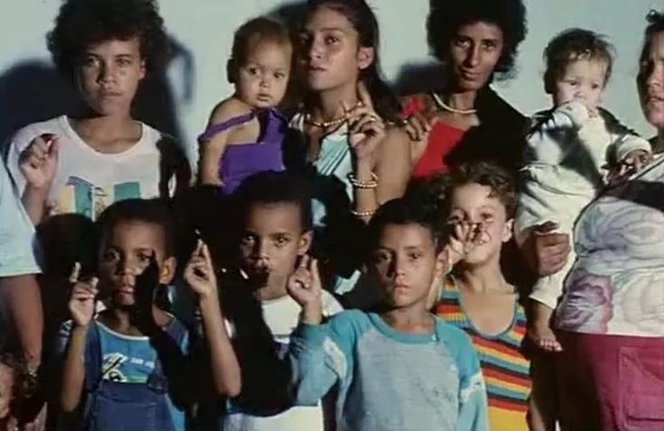
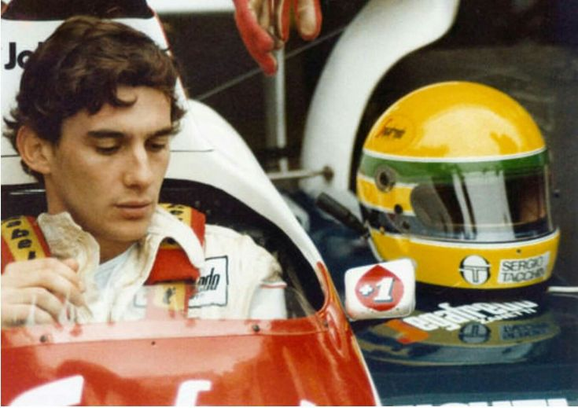
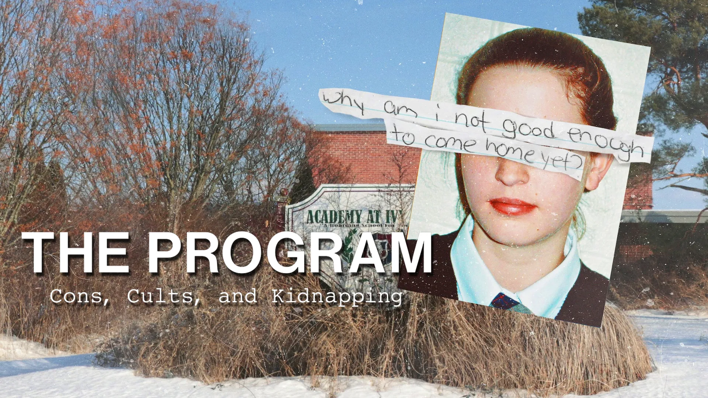

O Caso Varginha
A série documental O Mistério de Varginha, lançada em janeiro de 2026 pelo Globoplay, é a produção nacional mais recente e relevante sobre o caso que completou 30 anos.

A série documental O Mistério de Varginha, lançada em janeiro de 2026 pelo Globoplay, é a produção nacional mais recente e relevante sobre o caso que completou 30 anos.

O aclamado documentário Ilha das Flores (1989), de Jorge Furtado, foi recentemente eleito pela crítica como o melhor curta-metragem brasileiro de todos os tempos.

A série documental Don't Fck With Cats** voltou a ser um dos assuntos mais comentados em 2026 após o anúncio de um spin-off focado em crimes cibernéticos pela Netflix.

A carreira da lenda do automobilismo Ayrton Senna, herói nacional brasileiro e três vezes vencedor do Campeonato Mundial de Pilotos de Fórmula 1.
Série documental mostra trajetória complexa e multifacetada de uma das bandas mais emblemáticas do rock nacional.

Anos depois de ser enviada a um internato e ainda perturbada pelo que viveu, uma mulher decide revelar a corrupção da chamada 'indústria dos adolescentes problemáticos.'